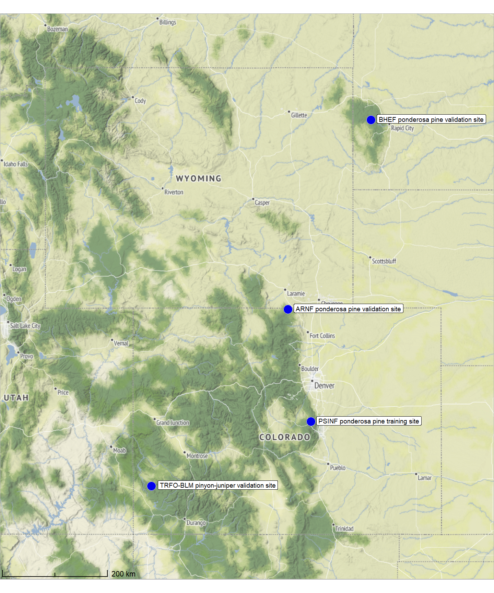
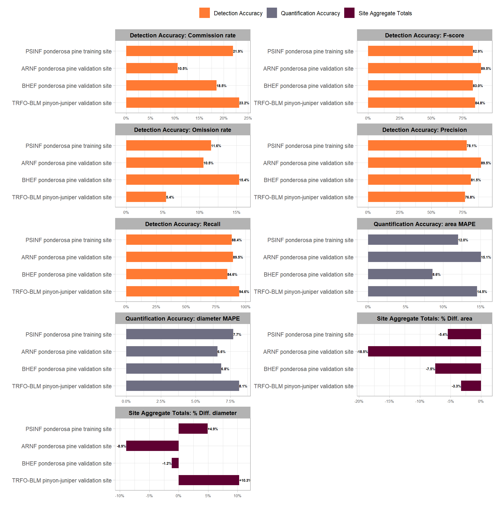

Section 13 Method Validation: Summary
Lastly, we will examine the aggregated performance achieved by the data fusion approach across all tested study sites. This comparison involves three distinct metric types:
- Detection Accuracy Metrics: These metrics are calculated by aggregating the raw counts of True Positives (TP), False Positives (FP), and False Negatives (FN) from all sites. They quantify the method’s ability to successfully locate and identify the piles.
- Quantification Accuracy Metrics: Calculated for instances classified as TP, these metrics (e.g., RMSE, MAPE, Mean Error) aggregate the differences between the predicted pile attributes (Area, Diameter) and the ground truth values. These metrics assess the method’s ability to accurately quantify the form of the piles it successfully identified.
- Overall Total Quantification Comparison: This involves summarizing the predicted and ground truth pile form measurements (area, diameter) for all instances across the entire study area, regardless of whether individual piles were successfully matched between datasets. This overall comparison provides insight into the method’s aggregated performance in predicting total pile size in an area. Such totals are often required for administrative needs like submitting burn permits which do not typically focus on individual pile quantification differences.
For all form quantification performance assessment, we will rely solely on comparison against image-annotated footprints by comparing predicted diameter and area against the image-annotated values. This consistency is required because image-annotated data is available for all sites, whereas field-measured height and diameter data were only available for the training site.
We already provided this information when introducing our method validation but here it is again:
The following table provides an overview of the four sites utilized in this study, detailing the unique characteristics of each location and how those features were expected to influence our methodology. We structured the validation effort to compare performance across a wide spectrum of data collection platforms, pile sizes, construction methods, and surrounding vegetation types, which required specific parameter adaptations for each site. This summary highlights the distinct ecological and structural challenges inherent to each evaluation site.
| Site Name | Pile Type | Data Use | Unique Features & Ecology | Methodology Parameter Influence |
|---|---|---|---|---|
| PSINF Ponderosa Pine Training Site | Mostly Hand Piles (some smaller machine piles) | Training | Located in the Pike and San Isabel National Forest (PSINF). Ponderosa pine stand with mixed ground cover and varying canopy density. | This site was used to fully develop and tune all slash pile detection parameters, including setting initial values for pile size thresholds and geometric shape regularity. |
| TRFO-BLM Pinyon-Juniper Validation Site | Hand Piles | Validation | Located on Bureau of Land Management (BLM) land in the Colorado Southwest District managed by the Tres Rios Field Office (TRFO-BLM). Arid environment with dry vegetation appearing less green including standing dead pinyon-juniper vegetation. Piles are smaller, simpler, and hand-stacked. | The dry, senescent vegetation might spectrally mimic dead wood thereby reducing the effectiveness of the spectral filter. This shifts the primary detection burden to the expected pile size and geometric shape filters to control false positives. |
| BHEF Ponderosa Pine Validation Site | Massive Machine Piles | Validation | Located in the Black Hills Experimental Forest (BHEF). Piles are massive, mechanically built, and irregularly shaped (e.g. not necessarily circular). Tree regeneration is expected based on local precipitation and typical regrowth response. | The large, irregular pile geometry requires setting high minimum size thresholds and relaxing geometric parameters. The presence of dense regeneration requires a highly restrictive spectral filter to distinguish dead slash from live biomass. |
| ARNF Ponderosa Pine Validation Site | Massive Machine Piles | Validation | Located in the Arapahoe and Roosevelt National Forest (ARNF). Ponderosa pine forest with a climate similar to the training site and drier than BHEF. Piles are massive but more circular and regular. Less regeneration is expected due to more recent treatment and drier climate. | The massive size requires high minimum size thresholds while more regular, circular shape allows for tighter geometric filters. Reduced expected regeneration means the spectral filter can be less strictly applied than at BHEF. |
read in the file with the aggregated results we wrote in each section
# read in the file with the aggregated results we wrote in each section
all_agg_ground_truth_match_ans <-
sf::st_read(dsn = all_agg_ground_truth_match_ans_fp, quiet = T) %>%
# readr::read_csv(file = all_agg_ground_truth_match_ans_fp, progress = F, show_col_types = F) %>%
dplyr::mutate(
site = ordered(site) %>% forcats::fct_relevel("PSINF ponderosa pine training site") %>% forcats::fct_rev()
, pct_diff_diameter = (pred_diameter_m-image_gt_diameter_m)/image_gt_diameter_m
, pct_diff_area = (pred_area_m2-gt_area_m2)/gt_area_m2
) %>%
dplyr::arrange(site)
# huh?
all_agg_ground_truth_match_ans %>% dplyr::glimpse()## Rows: 4
## Columns: 31
## $ site_area_m2 <dbl> 51825.21, 1030502.12, 735508.69, 174835…
## $ site <ord> TRFO-BLM pinyon-juniper validation site…
## $ tp_n <dbl> 262, 22, 17, 107
## $ fp_n <dbl> 79, 5, 2, 30
## $ fn_n <dbl> 15, 4, 2, 14
## $ omission_rate <dbl> 0.05415162, 0.15384615, 0.10526316, 0.1…
## $ commission_rate <dbl> 0.2316716, 0.1851852, 0.1052632, 0.2189…
## $ precision <dbl> 0.7683284, 0.8148148, 0.8947368, 0.7810…
## $ recall <dbl> 0.9458484, 0.8461538, 0.8947368, 0.8842…
## $ f_score <dbl> 0.8478964, 0.8301887, 0.8947368, 0.8294…
## $ diff_area_m2_rmse <dbl> 1.967614, 49.433509, 84.344929, 2.100498
## $ diff_field_diameter_m_rmse <dbl> 1.7995497, NA, NA, 0.5539741
## $ diff_height_m_rmse <dbl> 1.2064009, NA, NA, 0.6546709
## $ diff_image_diameter_m_rmse <dbl> 0.4527556, 4.0095773, 2.4229219, 0.4440…
## $ diff_area_m2_mean <dbl> -1.1914491, -17.9769566, -56.4997462, -…
## $ diff_field_diameter_m_mean <dbl> -1.7127948, NA, NA, 0.2124978
## $ diff_height_m_mean <dbl> -1.1668889, NA, NA, -0.2023439
## $ diff_image_diameter_m_mean <dbl> -0.2584928, -1.5220128, -1.7228389, -0.…
## $ pct_diff_area_m2_mape <dbl> 0.14541068, 0.08594908, 0.15073981, 0.1…
## $ pct_diff_field_diameter_m_mape <dbl> 0.3055677, NA, NA, 0.1121629
## $ pct_diff_height_m_mape <dbl> 0.5146757, NA, NA, 0.1548135
## $ pct_diff_image_diameter_m_mape <dbl> 0.08139310, 0.06837243, 0.06580834, 0.0…
## $ image_gt_diameter_m <dbl> 1155.4669, 545.7089, 492.8276, 463.7905
## $ pred_diameter_m <dbl> 1274.2344, 539.3018, 448.9317, 486.6239
## $ gt_area_m2 <dbl> 2942.573, 5198.640, 7770.433, 1185.542
## $ pred_area_m2 <dbl> 2846.445, 4808.925, 6335.122, 1121.190
## $ pred_volume_m3 <dbl> 1613.947, 5066.225, 22369.854, 952.529
## $ pred_height_m <dbl> 427.64159, 72.98016, 144.57194, 263.021…
## $ pct_diff_diameter <dbl> 0.10278747, -0.01174094, -0.08906938, 0…
## $ pct_diff_area <dbl> -0.03266808, -0.07496482, -0.18471433, …
## $ geom <POINT [m]> POINT (-1097708 1720721), POINT (-60821…Let’s map the study sites on a single map
sites_pal <- RColorBrewer::brewer.pal(n = nrow(all_agg_ground_truth_match_ans), name = "Dark2")
# option to put satellite imagery as base layer of mapview maps
mapview::mapviewOptions(
homebutton = T
# , basemaps = c("Esri.WorldImagery","OpenStreetMap")
, basemaps = c("OpenStreetMap", "Esri.WorldImagery")
)
# map it
mapview::mapview(
all_agg_ground_truth_match_ans
, zcol="site"
, col.regions = sites_pal
, cex = 8
, layer.name = "study sites"
)static map for printing
let’s make a pretty image for use in the journal article. we’ll use the ggmap package to get a nice background map and do some transformation to actually work with the map. We’ll add a map scale using ggspatial
library(ggmap)
library(ggspatial)
#########################################################################
#########################################################################
# Make each plot individually by landscape as solution to small multiples
# this block defines function
#########################################################################
##################hack to align plots for ggmap
ggmap_bbox_fn <- function(map, my_crs=3857) {
if (!inherits(map, "ggmap")) stop("map must be a ggmap object")
# Extract the bounding box (in lat/lon) from the ggmap to a numeric vector,
# and set the names to what sf::st_bbox expects:
map_bbox <- setNames(unlist(attr(map, "bb")), c("ymin", "xmin", "ymax", "xmax"))
# Convert the bbox to an sf polygon, transform it to 3857,
# and convert back to a bbox (convoluted, but it works)
bbox_3857 <- st_bbox(st_transform(st_as_sfc(st_bbox(map_bbox, crs = 4326)), my_crs))
# Overwrite the bbox of the ggmap object with the transformed coordinates
attr(map, "bb")$ll.lat <- bbox_3857["ymin"]
attr(map, "bb")$ll.lon <- bbox_3857["xmin"]
attr(map, "bb")$ur.lat <- bbox_3857["ymax"]
attr(map, "bb")$ur.lon <- bbox_3857["xmax"]
map
}
plt_crs <- 3857
#########################################################################
#########################################################################
#########################################################################
my_ggmap_basemap <- function(sf_data, zoom_level = 14, buffer_box = 2600, my_crs = plt_crs, scale_location = "bl", my_maptype = "stamen_terrain") {
# # should zoom in?
# zoom_level <- 14 # 11
# # should buffer extend?
# buffer_box <- 2600 # 20000
# bounding box
bb_temp <-
sf_data %>%
sf::st_bbox() %>%
sf::st_as_sfc() %>%
sf::st_transform(crs=5070) %>%
sf::st_buffer(as.numeric(buffer_box)) %>%
sf::st_transform(crs=4326) %>% # same as get_map return
sf::st_bbox()
# set bbox for get call
bbox_temp <- c(
bottom = bb_temp[[2]]
, top = bb_temp[[4]]
, right = bb_temp[[3]]
, left = bb_temp[[1]]
)
hey_ggmap <- ggmap::get_stadiamap(
bbox = bbox_temp
, zoom = zoom_level
, maptype = my_maptype #"stamen_terrain" #"stamen_toner_lite"
, crop = T
)
# ggmap::ggmap(hey_ggmap)
# apply align function
hey_ggmap_aligned <- ggmap_bbox_fn(hey_ggmap, my_crs) # Use the function
# plot
plt_basemap <-
ggmap::ggmap(hey_ggmap_aligned) +
ggplot2::coord_sf(
expand = FALSE
) +
ggplot2::theme_light() +
ggplot2::theme(
legend.position = "none"
, plot.title = ggplot2::element_blank()
, strip.text = ggplot2::element_blank()
, axis.title = ggplot2::element_blank()
, axis.text = ggplot2::element_blank()
, axis.ticks = ggplot2::element_blank()
, panel.grid = ggplot2::element_blank()
, plot.margin = ggplot2::margin(0, 0, 0, 0, "cm")
)
if(scale_location %in% c("bl", "br", "tr", "tl")){
plt_basemap <- plt_basemap +
ggspatial::annotation_scale(
location = scale_location
, style = "ticks"
, pad_x = unit(0.1, "cm")
, pad_y = unit(0.1, "cm")
)
}
return(plt_basemap)
}
plt_basemap <- my_ggmap_basemap(
sf_data = all_agg_ground_truth_match_ans
, buffer_box = 190000
, zoom_level = 7
, my_maptype = "stamen_terrain"
)
# plt_basemapplot it with the points
# plot
plt2_temp <-
plt_basemap +
ggplot2::geom_sf(
data = all_agg_ground_truth_match_ans %>% sf::st_transform(crs=plt_crs)
, mapping = ggplot2::aes(fill = site)
, size = 4.5
, inherit.aes = F
, shape = 21
, color = "gray88"
, fill = "blue2"
) +
ggplot2::geom_sf_label(
data = all_agg_ground_truth_match_ans %>% sf::st_transform(crs=plt_crs)
, mapping = ggplot2::aes(label = stringr::str_wrap(site, width = 40))
, size = 2.5
, hjust = -0.055
, vjust = 0.4
, inherit.aes = F
) +
ggplot2::scale_fill_manual(values = sites_pal)
plt2_temp
make a quick plot to look across study sites at the aggregated accuracy metrics
all_agg_ground_truth_match_ans %>%
sf::st_drop_geometry() %>%
dplyr::select(
site
## detection
,omission_rate,commission_rate,precision,recall,f_score
## quantification
# ,diff_area_m2_rmse,diff_field_diameter_m_rmse,diff_height_m_rmse,diff_image_diameter_m_rmse
# ,diff_area_m2_mean,diff_field_diameter_m_mean,diff_height_m_mean,diff_image_diameter_m_mean
# ,pct_diff_field_diameter_m_mape,pct_diff_height_m_mape
,pct_diff_area_m2_mape,pct_diff_image_diameter_m_mape
## totals
# ,image_gt_diameter_m,pred_diameter_m,gt_area_m2,pred_area_m2,site
,pct_diff_diameter,pct_diff_area
) %>%
tidyr::pivot_longer(cols = -c(site)) %>%
dplyr::mutate(
metric_type = dplyr::case_when(
name %in% c("omission_rate","commission_rate","precision","recall","f_score") ~ "Detection Accuracy"
, name %in% c("pct_diff_area_m2_mape","pct_diff_image_diameter_m_mape") ~ "Quantification Accuracy"
, name %in% c("pct_diff_diameter","pct_diff_area") ~ "Site Aggregate Totals"
, T ~ "error"
)
, label = scales::percent(value, accuracy = 0.1)
, name = dplyr::case_when(
name == "f_score" ~ "F-score"
, stringr::str_starts(name,"pct_diff_") & metric_type == "Site Aggregate Totals" ~ stringr::str_replace_all(name,"pct_diff_","% Diff. ") %>% stringr::str_to_sentence()
, stringr::str_ends(name,"_mape") ~ stringr::str_extract(name,"(area|diameter)") %>% stringr::str_c(" MAPE")
, T ~ stringr::str_replace_all(name,"_"," ") %>% stringr::str_to_sentence()
)
) %>%
dplyr::mutate(
label = dplyr::case_when(
metric_type == "Site Aggregate Totals" & value>0 ~ paste0("+", label)
, T ~ label
)
# , label_pos = ifelse(value > 0, 0.005, -0.0073)
, name2 = forcats::fct_cross(ordered(metric_type),ordered(name), sep = ": ")
) %>%
dplyr::arrange(metric_type, site) %>%
ggplot2::ggplot(
mapping = ggplot2::aes(x = value, y = site, color = metric_type, fill = metric_type)
) +
ggplot2::geom_col(
width = 0.6
, color = NA
) +
# ggplot2::geom_text(
# mapping = ggplot2::aes(label = label, x = label_pos, fontface = "bold")
# , vjust = 0
# , hjust = 0
# , color = "white", size = 3
# ) +
ggplot2::geom_text(
mapping = aes(
label = ifelse(value<0, label, "")
, fontface = "bold"
)
, color = "black", size = 2.0
, hjust = +1
) +
ggplot2::geom_text(
mapping = aes(
label = ifelse(value>=0, label, "")
, fontface = "bold"
)
, color = "black", size = 2.0
, hjust = 0
) +
ggplot2::facet_wrap(facets = dplyr::vars(name2), ncol = 2, scales = "free") +
harrypotter::scale_fill_hp_d(option = "ronweasley2", direction = -1) +
ggplot2::scale_x_continuous(labels = scales::percent, expand = ggplot2::expansion(mult = c(0.1,0.1))) +
ggplot2::labs(fill = "", x = "", y = "") +
ggplot2::theme_light() +
ggplot2::theme(
legend.position = "top"
, strip.text = ggplot2::element_text(size = 9, color = "black", face = "bold")
, axis.text.x = ggplot2::element_text(size = 6)
)
and a table
all_agg_ground_truth_match_ans %>%
sf::st_drop_geometry() %>%
dplyr::mutate(
ref_trees = tp_n+fn_n
, det_trees = tp_n+fp_n
) %>%
dplyr::select(
site
, site_area_m2
, ref_trees
, det_trees
, tp_n
, omission_rate,commission_rate,recall,precision,f_score
, pct_diff_area_m2_mape
, pct_diff_area
) %>%
dplyr::mutate(
site_area_m2 = round(site_area_m2/10000) %>% scales::comma(accuracy = 1)
, dplyr::across(
.cols = c(omission_rate,commission_rate,recall,precision,f_score)
, .fns = ~scales::percent(.x,accuracy=0.1)
)
, pct_diff_area_m2_mape = scales::percent(pct_diff_area_m2_mape,accuracy=0.1)
, pct_diff_area = scales::percent(pct_diff_area,accuracy=0.1)
) %>%
dplyr::arrange(desc(site)) %>%
kableExtra::kbl(
caption = "Data fusion method slash pile segmentation results for each study site"
, col.names = c(
"site", "hectares"
, "reference<br>piles", "detected<br>piles", "correct<br>piles"
, "omission<br>rate"
, "commission<br>rate"
,"recall","precision","F-score"
, "MAPE<br>area m<sup>2</sup>"
, "% aggregated<br>area difference"
)
, escape = F
) %>%
kableExtra::kable_styling(font_size = 9.5) %>%
kableExtra::collapse_rows(columns = 1, valign = "top")| site | hectares |
reference piles |
detected piles |
correct piles |
omission rate |
commission rate |
recall | precision | F-score |
MAPE area m2 |
% aggregated area difference |
|---|---|---|---|---|---|---|---|---|---|---|---|
| PSINF ponderosa pine training site | 17 | 121 | 137 | 107 | 11.6% | 21.9% | 88.4% | 78.1% | 82.9% | 12.0% | -5.4% |
| ARNF ponderosa pine validation site | 74 | 19 | 19 | 17 | 10.5% | 10.5% | 89.5% | 89.5% | 89.5% | 15.1% | -18.5% |
| BHEF ponderosa pine validation site | 103 | 26 | 27 | 22 | 15.4% | 18.5% | 84.6% | 81.5% | 83.0% | 8.6% | -7.5% |
| TRFO-BLM pinyon-juniper validation site | 5 | 277 | 341 | 262 | 5.4% | 23.2% | 94.6% | 76.8% | 84.8% | 14.5% | -3.3% |
The aggregated results across all three study sites, including the complex, out-of-sample validation sites, demonstrate the consistent transferability and dependability of our data fusion slash pile methodology. All sites achieved consistently high detection performance, with F-scores ranging narrowly from 83% to 89%, confirming the method’s overall effectiveness despite vast differences in pile sizes, vegetation, terrain, and construction techniques.
The specific composition of errors (false positives and false negatives) highlights the success of the site-specific parameter adjustments. The pinyon-juniper validation site (277 piles) recorded the highest F-score (85%), driven by a very high recall rate (95%) which suggests the structural parameters effectively located the many smaller, hand-piled objects, even with less restrictive structural filters. However, this high recall came at the expense of the lowest precision (77%), confirming our observation that the spectral filter failed to exclude numerous false positives (FPs) because the site’s senescent, arid vegetation mimicked the spectral signature of dead wood in piles. In contrast, the BHEF ponderosa pine evaluation site (26 piles) achieved a strong F-score (83%) which is notable given the low pile count amplifies the influence of each error. This site had the lowest recall (85%) due to the complexities of segmenting the massive, irregular pile shapes, but it maintained the highest precision (81%), demonstrating that the strict spectral filtering (spectral_weight set to its maximum value of ‘5’) successfully minimized FPs from the dense ponderosa pine regeneration groups, validating that parameter choice for environments with dense regeneration or shrub cover.
Consistent pile form quantification accuracy indicates the method reliably extracts of pile form measurements (e.g., area, height) for use in planning the management of the piles. The MAPE on pile area, which measures the average error in sizing individual, successfully matched piles, was below 15% across all sites, ranging from 9% to 15%. This result suggests that the methodology can consistently quantify the form of individual piles with high accuracy regardless of the extensive differences in pile sizes, terrain, and construction forms. The BHEF ponderosa pine evaluation site recorded the lowest MAPE on pile area (9%), meaning the piles it did find were sized most accurately of the sites measured.
Analysis of the site aggregate totals revealed a systematic underprediction of the total area across all sites. This systematic underestimation, with errors ranging only from -18.5% to -3.3%, is an important result for administrative needs (such as burn permits), as it avoids overstating the total quantity of fuel (area or volume) on a site. The BHEF ponderosa pine evaluation site had the largest aggregate pile area underestimation (-7.5%). This was likely caused by lower recall rates resulting from the watershed algorithm splitting single massive piles due to their irregular elevation profile or from CHM artifacts produced by cloud cover and SfM flight stitching. The pinyon-juniper site had the highest individual pile area MAPE (14.5%), indicating the worst individual sizing accuracy, but it achieved the closest match to the true total pile area over the entire site (-3.3%), implying that the individual sizing errors of the retained piles compensated for each other across the entire site extent.